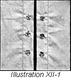
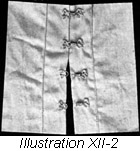
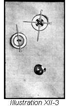
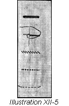
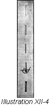
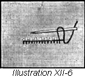
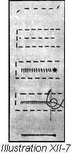
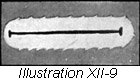
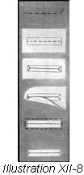

1926—The New-Way Course in Fashionable Clothes-Making
Lesson 12—Fastenings
What Shall the Fastening Be?
When you begin to make blouses and dresses and pretty underthings, you will begin to ask yourself this question. Shall it be hooks and eyes, or buttons and buttonholes—or shall it be some pretty embroidery fastening that adds to the charm of the garment at the same time that it effects a pleasing closing?
The purpose of this lesson is to teach you how to make the various kinds of buttonholes, how to sew on hooks and eyes so that they hold the garment together securely and do not pucker or pull, but most important of all—which type of fastening to use for each particular style of garment you are making. Fastenings are quite important; they are, in fact, only less important than the placket itself. After all, the object of the placket is to hold the garment together without calling attention to the closing,—but how can this purpose be achieved without the help of an appropriate and correct fastening?
There are tailored buttonholes and plain buttonholes, bound buttonholes and cut-in buttonholes—there is a different kind of buttonhole for different kinds of dresses and blouses. And in order to be the perfect dressmaker you are planning to be you must know them all—know how to use them and when to use them. Do not feel that this lesson is unimportant. It is really one of the most important lessons of the course for it teaches you how to impart the just-right finishing touch to your dress or blouse after you have completed it.
Learn how to make each kind of buttonhole and how to sew on hooks and eyes correctly. Study each step carefully, practice until you can make each item in this lesson correctly—and then when you are ready to make pretty things to wear you won't have to even stop to think about how you are going to fasten it!
Sewing Fasteners
The purpose of the placket is primarily to conceal the closing, but also to serve as a base for the fastenings—whether they be hooks and eyes or buttons and buttonholes. It is therefore only after the placket has been correctly made that the fastenings can be applied.
As soon as the placket is completed, all seams and stitchings should be carefully pressed, and all bastings should be removed as soon as they are no longer needed to hold the materials in place. Extreme care should be taken to prevent stitches of any kind showing through on the right side of the garment, as this draws attention to the closing and thus defeats the very purpose of the placket.
When there is no very great strain, snap fasteners are perhaps the very best fastenings. They make a most satisfactory flat finish and are almost unnoticeable. However, this type of fastening cannot be used where there is straining, such as the belt at the waist, or at the shoulders, etc. However, snap fasteners may be used if these strained places are reinforced with hooks and eyes.
Buttons and buttonholes are used most frequently on children's clothes and on underwear. They are also used on tailored blouses and dresses made of heavier materials. Buttons should always be chosen to harmonize with both the style and color of the dress, and they should never be so conspicuous that they detract from the more important trimmings of the dress or blouse.
In using fastenings of any kind, always select the proper size and have them of good quality. The less expensive grades are apt to rust in the first laundering, and they do not wear well. Certainly fastenings of this inferior type do not do justice to a dress or blouse into which you have put all your artistic ability, all your knowledge of dress and the making of dress! It is always best— and cheapest, too—to buy the better grade of fastenings.
Marking Position of Snap Fasteners
Snap fasteners are usually sold by the card. If you are working on a dress or blouse, be sure that you have enough fasteners before you begin to apply them to the closing.
The edge of the closing may be finished with a facing if so desired. Or the fasteners may simply be sewed to the opposite sides of the placket. However, it is always wisest to reinforce the placket with a facing to give the fasteners a more solid foundation.
- To mark the position of the snap fasteners, first pin a tape line to the wrong side of the upper part of the placket or opening, the edge of the tape line being three-eighths inches from the outside edge of the placket.
- With basting thread make a small stitch at the edge of the tape line to mark the position of the fasteners. These stitches should be one and one-fourth inches apart.
- If you wish, you may make the mark with tailor's chalk or pins. Basting is always much more secure.
- When the basting is made, remove the tape and proceed to sew the fasteners in place.
To Sew Fasteners in Place (Illustration XII-1)
- First place the center of the ball section of the fastener directly over the small basting stitch or mark, and sew down securely with three or four small overhand stitches through each hole in the edge of the fastener. Be sure that the thread is fastened securely before you begin overhanding.
- Continue sewing the ball sections of the fastenings along the marked line at regular intervals, until all the fasteners desired are attached.
- Now pin the placket together as it should be when properly closed and press slightly on the wrong side.
- Open up the placket again and you will find that the pressing has marked the exact spot where the ball portion of the fastener meets the socket in the other side of the fastener. These marks will be on the under part of the placket.
- Place the center of the socket portion over the depression made by the ball in the attached part of the snap fastener, and sew down as you did before. This will complete the fastener, and the ball and socket parts will be exactly in the right places.
Sewing Hooks and Eyes in Place (Illustration XII-2)
There are two kinds of sewing eyes—the round and the flat. On dress linings where great strain is usually imposed upon the fastenings the round eyes are used. Under the placket the flat eye is usually used. First we will see how the flat-eyed fasteners are attached.
- Mark for hooks on right hand or upper side of the placket, in the same way as you marked the placket for the ball part of the snap fasteners.
- Place the hook on the mark made, with the bill of the hook one-eighth of an inch from the edge of the placket and sew with several overhand stitches through the eyes at the back of the hook.
- Bring the needle to the front of the hook and sew the bill fast with two or three stitches.
- Add two stitches under the hump to hold the hook down, and fasten thread to prevent ripping.
Be sure that you attach your hooks and eyes neatly, taking small stitches that do not show through the right side of the placket, for good workmanship is evident in just such details as these. And remember, too, that there is no finish to cover the stitches after you have made them. - Now to find the place for the eyes, pin the garment together as it should be when finished, with the placket closed down exactly in place.
- From the right side, mark with pins the places where the eyes belong; this is done by lifting the edge of the placket slightly— marking the place for eyes exactly where the front end of the hook comes.
- Sew on the eye with several overhand stitches through the loops in the end.
- Be sure to fasten all threads securely to prevent ripping.
Now let us see how the round eyes are attached.
- Mark the same as for flat eyes, and sew on through the loops at the back of the eye and take two or three stitches over the side of the eye near the edge of the garment, allowing the round edge to extend one-eighth of an inch beyond the edge of the garment.
- When sewing on flat eyes, the eyes are on the left hand side of the garment and the hooks on the right. This holds true also of the round eyes. Do not make the mistake of having the hooks on the wrong side.
- Proceed to sew on the hooks as before.
When Fastenings are on Tape
Fastenings are often made on tape, and hooks and eyes can be purchased attached in this manner.
This tape may be applied to the garment with machine stitching, affording a rapid and easy way of securing fasteners. We do not advise this type of fastening, except on the most simple and unattractive of play clothes as it is apt to gap, and it looks clumsy and untidy. It may be a good fastener, but it is certainly not a good finish nor an indication of good workmanship.
Sewing on Buttons (Illustration XII-3)
- Mark for buttons.
- Knot thread.
- Fasten the thread with the back stitch, the knot on the right side of the material exactly over mark.
- Place the button over this and sew through the holes in the button either across the center or from side to side, keeping the pin under the threads.
- Wind the thread beneath the button to form a shank.
- Fasten thread firmly.
- If the button has a shank fasten thread on wrong side of material and bring the needle through to the right side and sew over the shank being careful to draw the threads evenly.
Buttonholes
Buttonholes are either a success or a failure—they are either pretty, attractive and serviceable or unsightly and impractical. There is no in-between. To make correct buttonholes, it is only necessary to follow the directions given here. Each type of buttonhole is taken up individually, and explained carefully step-by-step, no detail however minute omitted.
You will find that buttons and buttonholes are more serviceable and satisfactory than snap fasteners on garments made of washable materials. One reason is that snap fasteners, even the best, are likely to rust; another is that buttons seem to blend so well with washable materials. Have a pair of buttonhole scissors, if possible. The first requisite of a good buttonhole is a well-cut outline, and if it is not cut neatly and correctly, the finished buttonhole cannot be well-tailored and neat. Every step must be well done if the finished work is to be the best.
On women's clothes, buttonholes are made on the right hand side of the closing. This means that the garment is closed from right to left. It may be, however, that a certain trend in the march of style decrees the exact opposite for the sake of novelty. On men's garments, the buttonholes are on the left hand side of the garment, closing from left to right. This rule is invariable.
The buttonhole most frequently used is the Plain Buttonhole. It is one of the most simple, yet one of the most practical; dressmakers use it whenever they want a fastening that is both neat and firm. Let us see just how this buttonhole is made.
Plain Buttonholes (Illustration XII-4 and 5)
You may cut buttonholes either lengthwise or crosswise of the material. Always choose the type that is best suited to the garment you are making, and take into consideration also the position of the buttoning. This slit in the material for the buttonhole should be one-eighth of an inch longer than the button is wide.
- Decide the exact position and length of the buttonhole and mark with colored basting or tailor's chalk.
- Use a single thread a little heavier than used to sew the garment. If the garment is of silk or wool, use buttonhole twist which can be bought in a dressmaking supply shop.
- Have the thread long enough to work the entire buttonhole, as a knotted thread mars the appearance of the finished work.
- Make a stay line of fine running stitches around the mark which shows the size and position. Make these lines of running stitches just far enough apart to be able to cut the buttonhole between them and not cut the thread, but be sure it is made close enough to the mark that a short stitch over the edge of the buttonhole will cover it.
- Be careful that you do not break off your thread at this point. If you have buttonhole scissors, set the gauge to cut the proper size opening and cut your buttonhole straight and even. Be very careful not to cut into the material, but cut along a straight, unbroken line. If you have no buttonhole scissors you will have to use your dressmaking shears, but you will doubtless find it a trifle more difficult.
- Now continuing with the same thread used for staying, overcast the buttonhole with very fine stitches. Do not crowd stitches.
- With the thread still unbroken, begin at the back of the buttonhole and place the needle half its length through the slit. Insert the point of the needle in the material close to the end of the buttonhole and just back of the line of staying stitches.
- With the needle pointing toward you, bring the double thread from eye of needle and around the point from right to left. Draw the needle through the cloth and pull up the thread. This forms a close twist or pull, exactly on the edge of the slit, making a neat and firm finish.
- Continue with this stitch to the outer end of the buttonhole, making the stitches the same depth and the same distance apart. When you reach the end of the buttonhole—by the end we mean the side opposite the one where you began the purling stitch—you must make the cart wheel end.
The Cart Wheel End
- To make the cart wheel end spread the stitches on the outside edge and crowd on the edge of the buttonhole.
- Be careful that the stitches are not crowded so much that they become clumsy. The whole secret of the cartwheel end is fine stitches, close to each other and crowded around the end of the buttonhole in circle form.
- When the corner is turned, proceed as before with the purling stitch.
To Finish the Buttonhole
- With uncrowded stitches, work along the other side of the buttonhole until the end is reached.
- Finish this end with a simple bar stitch or with another cart wheel.
- If the buttonhole is lengthwise of the material, it is best to make both ends with a bar instead of with the cart wheel. And similarly, if the buttonhole is crosswise of the material, it is best to make the nearest end with the cartwheel.
- Here's the exact way to make the barred end: — bring the thread from underneath the buttonhole and make two straight stitches on the right side of the material and at the end of the buttonhole. This forms a bar. Overcast this barred edge, the thread catching through the material beneath.
French Buttonholes (Illustration XII-6)
Another buttonhole used a great deal is the French Buttonhole. It is also quite simple to make, and imparts a neat, smart finish to the garment.
- To make, begin the same as the plain buttonhole, preparing the position and length of the buttonhole and cutting it straight and even.
- Begin with an unbroken thread at the lower left hand end of the buttonhole.
- Put the needle through the slash with the point emerging below the stay thread, draw the needle through but do not draw the thread tight.
- By leaving the thread loose, a small loop with a half twist remains at the end of the buttonhole.
- Place the needle back of this loop, the needle pointing toward you, and bring the thread through the loop straight upward. Draw the thread tight.
- This makes a purl edge which is very suitable for thin materials and dainty garments of every kind. It is especially appropriate for infants dresses and undergarments.
It is always advisable, after a buttonhole is finished, to overcast the edges together, with basting thread and to press it well on the wrong side. This insures a smooth edge and it also expedites the proper shaping of the edges of the buttonholes. You can leave the overcasting stitches in until the entire garment is completed then they may be ripped out. Be careful in ripping not to interfere with the permanent stitches of the buttonhole.
Tailored Buttonholes (Illustration XII-7)
Like anything else that is tailored, the tailored buttonhole must be made with exceptional care. Effort must be made to make it look tailored—to give it the smart, well-finished appearance indicative of excellent workmanship. On skirts, tailored blouses, serge and tricotine dresses the tailored buttonhole is exceedingly attractive—and by learning now exactly how to make it you will have no difficulty later on when you begin to make pretty clothes.
Most important of all, in consideration of the tailored buttonhole, is that it must be made neatly and correctly. A tailored garment that is perfect in every other phase of its construction, is completely marred by ill-cut and poorly made buttonholes. It is a well-known fact that tailors and dressmakers pay particular attention to the fastenings of a dress or skirt, and we want you to be able to take great pride in the buttonholes you are going to make by the time you master this lesson.
- Tailored buttonholes should be crosswise of the material, not lengthwise.
- Mark the exact position and length that the buttonhole is to be with basting thread or tailor's chalk.
- This buttonhole must be barred at the back and made with an eyelet at the front; stay it with running stitches, as explained before, with this point in view. The stay should be the exact shape of the finished buttonhole.
- Now cut the buttonhole, making it straight and even.
- In heavy material you may find it necessary to cut away a little of the material to make the finished eyelet smooth and well-shaped. There are certain regulation buttonhole scissors for tailored buttonholes that will cut the eyelet the exact size and shape you want it, but if they are not available you will find ordinary buttonhole scissors just as appropriate.
- To cord, use very narrow round tailor's cord or braid, attaching it to the edge of the buttonhole with the loop stitch, or an overcast stitch.
- Work buttonhole the same as plain buttonhole, finishing it at the back with a bar. Use a stiletto for shaping the eyelet.
Bound Buttonholes (Illustration XII-8 and 9)
Bound buttonholes can be made on the sewing machine or by hand.
We suggest that in practice you make large buttonholes— especially for those that are bound—for small buttonholes are always more difficult to make. As your progress makes you more perfect, and you gradually become expert in the art of buttonholing, but may decrease the size to suit conditions.
The uses of the bound buttonhole are many—although limited. We say limited, because a bound buttonhole would certainly not be appropriate on a sheer, dainty blouse, or on a pretty little summer frock. But on children's clothes, on tailored dresses, on undergarments, the tailored, bound buttonhole is as pleasing a trimming as it is a firm and solid fastening. But remember that it must be well made and well pressed before it has any semblance whatever to tailoring, and before it can impart a smart finish.
- Mark the position and length of the buttonhole with colored basting thread.
- Cut the binding, to be used as an outline of the buttonhole, two inches wide and one inch longer than the buttonhole itself is going to be. This binding may be on the bias, but if not bias it must match the grain of the material in the garment—by this we mean that the warp and the design of the facing must be the same as the warp and the design in the garment.
- Baste the center of the binding to the buttonhole mark, the right side of the binding to the right side of the garment. The right side of the facing should cover the buttonhole mark. Be sure that the same amount of material is allowed to extend beyond the buttonhole mark at each end.
- Turn the garment to the wrong side and baste through the original marking for a slash, so it will show on the facing at the right of the garment. One sixteenth of an inch from each side of this slash mark make a line of machine stitching. The corners of this stitching must be turned in such a way that the ends are square. (See illustration XII-8 second figure from the top.)
- Leave the thread long enough at the end of the machine stitching to fasten securely; this is accomplished by tying the ends tightly together.
- Remove the bastings and cut the slash with very sharp scissors. Make diagonal cuts at corners as shown in illustration.
- Through this opening turn the binding strip to the wrong side, allowing the upper and lower facing to extend one-sixteenth of an inch below the slash.
- Baste exactly on the line of seam, and turn the work to the wrong side.
- Now trim the facing to the desired width, turn the edge of the facing under exactly on the seam line.
- In some garments, such as coats where a lining or facing is used, the buttonhole facing is not turned under but is basted down flat and the lining or facing hemmed over it. This covers all raw edges.
Bound buttonholes must be pressed carefully after making. Tiny stitches, close together, insure a neat finish. When making a bound buttonhole, you can either use the same material as the garment itself for the facing, or a contrasting color material.
Cut-In Buttonholes
Let us call the bound buttonholes as made with the binder attachment, cut-in buttonholes. As suggested above, refer to your sewing machine instruction book for full information regarding this method of making bound buttonholes, but also follow the instructions incorporated for your benefit below.
- Cut-in buttonholes are tiny bound and shaped slashes cut in the edge of the garment.
- First cut the slashes the desired length, beginning at the outer edge, and trimming away one-eighth of an inch off each edge of the slash. Take nothing off at the inner point. This forms the shape.
- Bind these small slashes together with the binder, just as you bound a continuous placket in Lesson 10.
- Trim the outside edge even, and bind. You will find that you have made a neat, practical, wear-defying and attractive row of buttonholes—exceptionally appropriate for children's clothes.